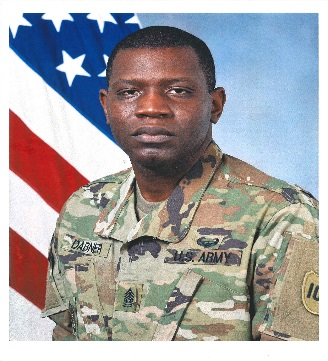

|  | Terry BondsCommand Sergeant Major CSM Terry Bonds is a native of St. Louis, Missouri. He entered the US Army on September 10, 1996 as Fire Support Specialist and attended Basic Training at Fort Sill, OK. CSM Bonds has served in a variety of leadership positions throughout his twenty-four year career. |
| Position | Location |
|---|---|
| Records NCO | 5th BDE, 100th DIV (IT), Millington Naval Support Activity |
| Drill Sergeant and Senior Drill Sergeant | D Co 4-485th BN, Tupelo MS |
| Debris Safety Trainer | 7th EN District New Orleans, LA |
| Senior Drill Sergeant Leader and Chief Instructor | 108th DIV (IT) DSS Fort Jackson, South Carolina |
| Deputy Commandant | USAR Drill Sergeant School Fort Jackson, South Carolina |
| First Sergeant | A & B Co 3-323rd REGT, Athens, GA |
| First Sergeant | FSC, 467th EN BN, Millington Naval Support Activity |
| Command Sergeant Major | 8th Battalion 100th Regiment (Health Services), Millington Naval Support Activity |
| Command Sergeant Major | 1st Battalion, 289th Infantry Regiment, Ellington Field, Texas |